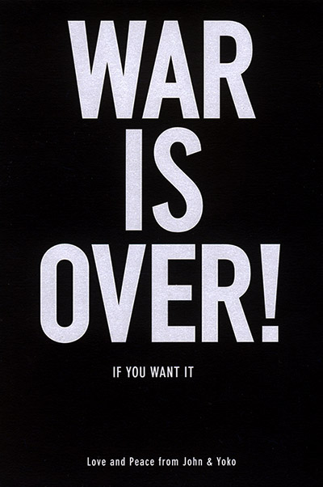

The culture war (or culture wars) in American usage is a metaphor used to describe political conflicts based on sets of conflicting cultural values. The term frequently implies a conflict between those values considered conservative or authoritarian and those considered progressive or liberal. The "culture war" is sometimes traced to the 1960s and has taken various forms since then.
Most of these "issues" are actually attacks on secular culture by right-wing Christians:
|
